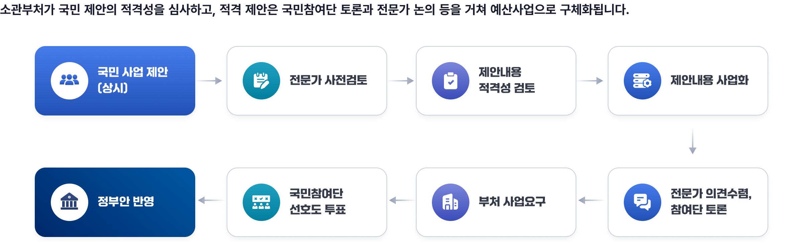
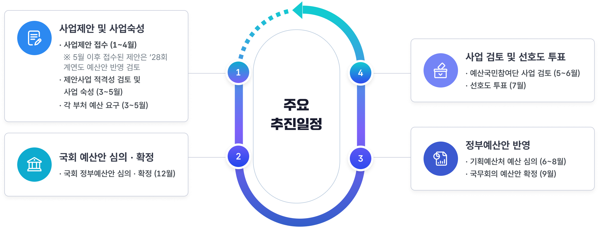

참여예산제도 소개
국민참여예산제도란?
기획예산처는 예산과정에 국민참여를 제고하기 위해 국민참여예산제도를 2017년 시범 도입하여 2018년부터 본격적으로 운영하고 있습니다.
국민 아이디어 제출은 국민참여예산제도 온라인으로 등록만 하면 예산제안 시 적용 대상이 아니며, 제정과정 주요 사항에 대한 토론과정에 참여하여 의견을 개진할 수도 있습니다.
그리고 국민제안사업에 대한 검토 및 숙성, 선호도 투표 등 다양한 활동을 수행하는 예산국민참여단으로도 참여하여 활동하실 수 있습니다.
의의 및 법적근거
의의
국민이 예산사업의 제안, 심사, 우선순위 결정 과정에 참여하는 것 → 재정민주성·투명성 제고
법적근거
국가재정법 제16조 및 동법 시행령 제7조의2
관련 법령 원문 보기
국가재정법
제16조(예산의 원칙) 정부는 예산의 편성 및 집행에 있어서 다음 각 호의 원칙을 준수하여야 한다.
4. 정부는 예산과정의 투명성과 예산과정에의 국민참여를 제고하기 위하여 노력하여야 한다.
국가재정법 시행령
제7조의2(예산과정의 국민참여)
①정부는 법 제16조제4호에 따라 예산과정의 투명성과 국민참여를 제고하기 위하여 필요한 시책을 시행하여야 한다.
②정부는 예산과정에의 국민참여를 통하여 수렴된 의견을 검토하여야 하며, 그 결과를 예산편성시 반영할 수 있다.
③정부는 제2항에 따른 의견수렴을 촉진하기 위하여 국민으로 구성된 참여단을 구성할 수 있다.
④제1항에 따른 시책의 마련을 위하여 필요한 구체적인 사항은 기획예산처장관이 정한다.
국민 참여예산제도 유형

소관부처가 국민 제안의 적격성을 심사하고, 적격 제안은 국민참여단 토론과 전문가 논의 등을 거쳐 예산사업으로 구체화됩니다.
- 국민 사업 제안(상시)
- 전문가 사전검토
- 제안내용 적격성 검토
- 제안내용 사업화
- 전문가 의견수렴, 참여단 토론
- 부처 사업요구
- 국민참여단 선호도 투표
- 정부안 반영
주요 추진 일정

- 사업제안 및 사업숙성: 사업제안 접수 1~4월. 5월 이후 접수된 제안은 ’28회계연도 예산안 반영 검토. 제안사업 적격성 검토 및 사업 숙성 3~5월. 각 부처 예산 요구 3~5월.
- 사업 검토 및 선호도 투표: 예산국민참여단 사업 검토 5~6월, 선호도 투표 7월.
- 정부예산안 반영: 기획예산처 예산 심의 6~8월, 국무회의 예산안 확정 9월.
- 국회 예산안 심의·확정: 국회 정부예산안 심의·확정 12월.